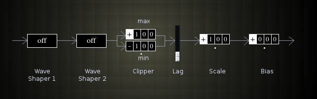

Cutil
 Previous( Cmixer control mixer )
Next( Envgen Envelope generator )
Home
Contents
Synth Catalog
Previous( Cmixer control mixer )
Next( Envgen Envelope generator )
Home
Contents
Synth Catalog
Control signal utility.
- Wave Shaper 1.
- Off
- abs - absolute value
- cube
- Wave shaper 2.
- Off
- ->bipolar - convert unipolar signal to bipolar *see below
- ->polar - convert bipolar to unipolar *see below
- Clipper upper threshold.
- Clipper lower threshold.
- Lag slider.
- Scale - multiply signal by scale amount.
- Bias - add bias t signal.
Previous( Cmixer control mixer ) Next( Envgen Envelope generator ) Home Contents Synth Catalog